3D Vision¶
3D Representations¶
surface/boundary representations:
Depth Maps¶
representing the visible without 3D structure - 2.5D
Point Clouds¶
Triangular Meshes¶
三个点组成的三角形叫face，表示了point cloud之间点的关系
可以计算ray-triangle intersections
可能有歧义（向内还是向外）
改变点的位置可以改变物品的shape，但是有些改变涉及到的数据会比较多，也比较复杂
Parametric Surfaces¶
例如：
提供了二维平面坐标到三维坐标的映射
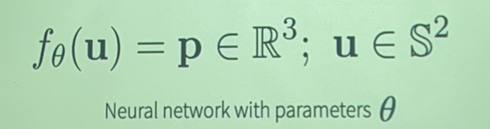
问题就是如何找到一个global structure去表示形状外的点
rendering也比较困难，因为对于\(f\)而言很难应用到ray-triangle intersections
volume representations:
Voxelized 3D¶
将三维空间分割成小立方体（体素），每个体素代表三维空间中的一个固定体积，类似于二维图像中的像素。通过这种方式，可以用体素来描述和表示复杂的三维形状和结构。
相比mesh（只是表示表面），这种方式需要更多数量的体素去达到一个比较好的表示效果。
Implicit Surfaces¶
一般的式子为\(F(x,y,z) = 0\)
物品外部为正，内部为负
对于这种表达方式，Boolean operations are easy。
- 识别交点和交线：
- 计算两个几何体之间的交点和交线。这通常涉及几何体的边与面的相交检测。
- 对于多边形网格，这可能需要遍历所有面和边，使用射线投射或其他几何算法来检测交点。
- 分割几何体：
- 使用交点和交线将原始几何体分割成多个部分。每个部分代表几何体的一部分，这些部分可以是面片、体素或其他几何元素。
- 确保分割后的几何体仍然保持正确的拓扑结构。
- 选择保留部分：
- 根据所选的布尔操作类型（并集、交集或差集），确定哪些部分需要保留。
- 并集：保留两个几何体的所有部分。
- 交集：仅保留两个几何体的重叠部分。
- 差集：保留一个几何体的部分，同时去除与另一个几何体重叠的部分。
- 合并几何体：
- 将保留的部分合并成一个新的几何体。这可能需要重新生成网格或曲面。
- 确保合并后的几何体是封闭的，并且没有自相交的部分。
- 修复拓扑结构：
- 检查并修复任何拓扑错误，如重复顶点、边或面。
- 确保所有的法线方向一致，并且几何体的表面是光滑的。
- 优化和简化：
- 进行必要的优化步骤，如去除冗余的几何元素、简化网格和提高计算效率。
- 可能需要使用网格简化算法来减少多边形数量，同时保持几何体的形状和细节。
能够自然地描述复杂的形状和拓扑结构。
Signed Distance Function¶
对于空间中的一个点，SDF返回该点到最近的表面的距离
这都是建立在solid shape的基础上的，不支持包含烟雾、液体的表达
对于烟雾来说，识别一个点在物体里面外面没有意义，可以使用一个点的密度去表达这个shape
Image Formation¶
我们需要解决的问题是如何通过Surface-based 3D形成image
我们需要解决：
- Geometry - 一个3Dpoint在image的哪个点
- Physics - 这个点成像结果是什么样的
Geometry¶
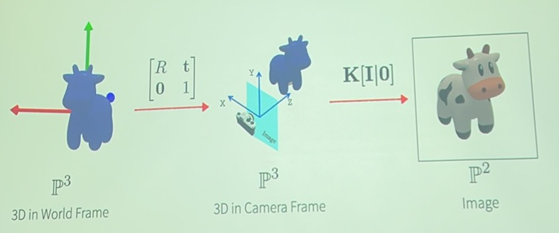
从世界坐标系（World Frame）到相机坐标系（Camera Frame）的变换：
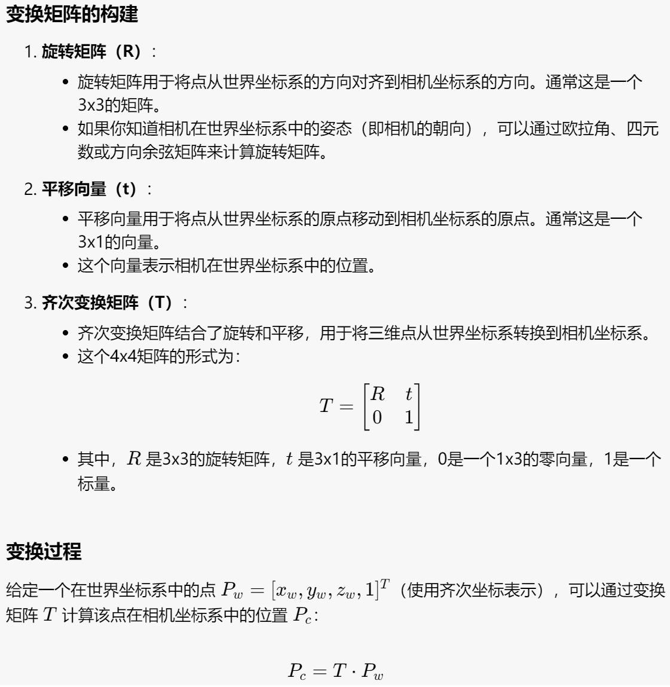
相机坐标系映射到image：
在一般情况下一个点会接收来自四面八方的光，没有办法成像，所以我们引入了pinhole camera
从数学原理上讲，我们需要pinhole projection model完成3D形状到2D image位置的映射
在我们默认\(f = 1\)的情况下，映射关系为\((X,Y,Z)\to(\frac{X}{Z}, \frac{Y}{Z})\)
但是我们没有办法直接通过上述式子写出矩阵形式，需要增加一个维度实现（具体公式见prelearning）
当pinhole位置不等于image原点的时候我们对变换矩阵要作一定的改变即可实现。
Physics¶
radiance: energy along a ray, 可以通过公式计算出一条ray射到一个point上面的energy
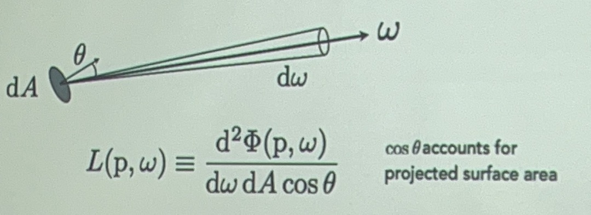
根据当前点接收到的ray energy强度以及点上的material可以计算image pixel上面的appearance
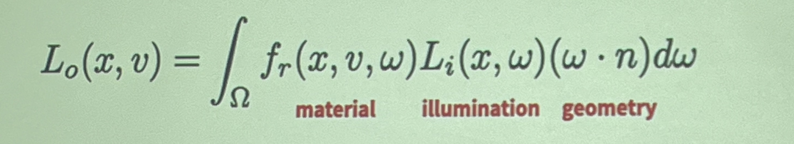
\((\omega·n)\)是直射和偏射的区别（同样一条射线直射能量高，偏射能量低）
3D from Multi-view¶
是通过不同视角的照片重建3D模型的过程。
理论上两个视角就可以重建，但是这非常困难，增加相机数量会重建得更加准确。
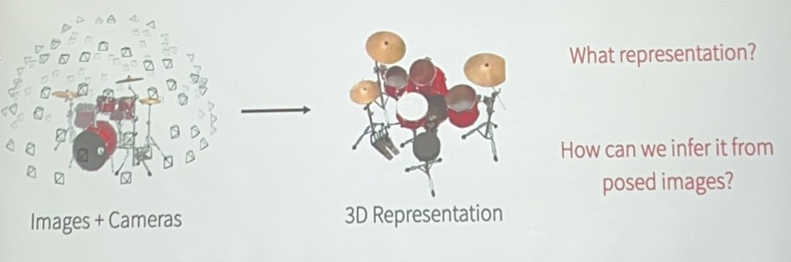
我们要关注的不仅仅是重建出的3D信息，更要关注如何渲染这个3d representation进而如何很好地传递信息。
(Neural/Grid-based) Density Fields¶
密度场：3D点到该点密度的映射
关键问题就是如何渲染密度场，在渲染后的图像中每一个像素表示什么、如何来的？
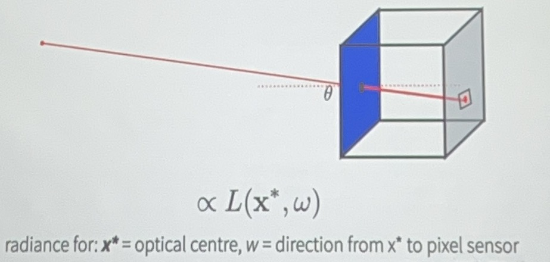
但是这个方法不适用于流动的物品，例如雾、云、液体等
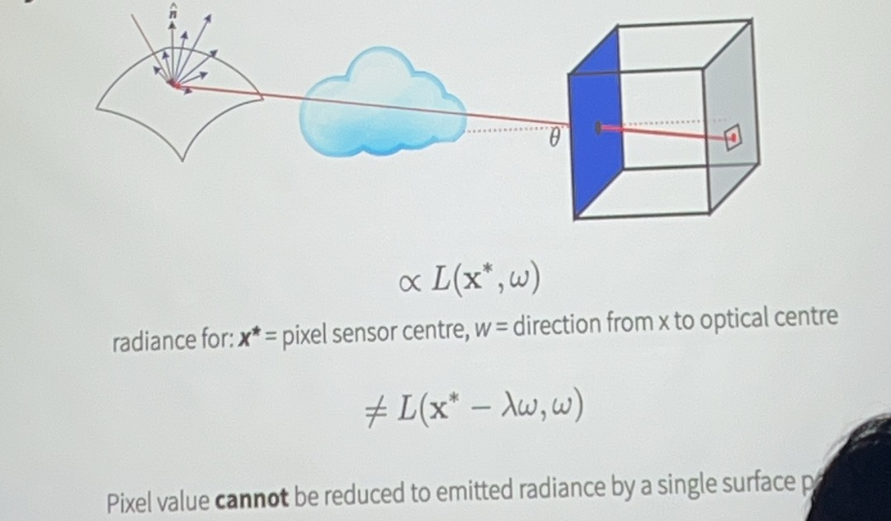
我们需要知道光线（的能量等）在这个介质中发生了什么变化
- absorption，光线的部分能量丢失

左边是absorption系数（和介质有关），中间是原始的光线能量（原本光线能量越强，吸收越多），对介质厚度积分
- emission - 部分介质自己会发射光线，例如火焰
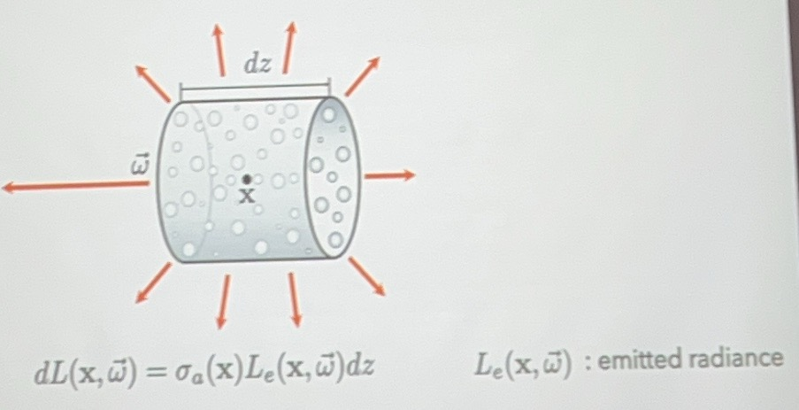
会增加光线的能量
-
scattering - 一部分是折射出去的，一部分是折射进来的
-
out-scattering
- in-scattering
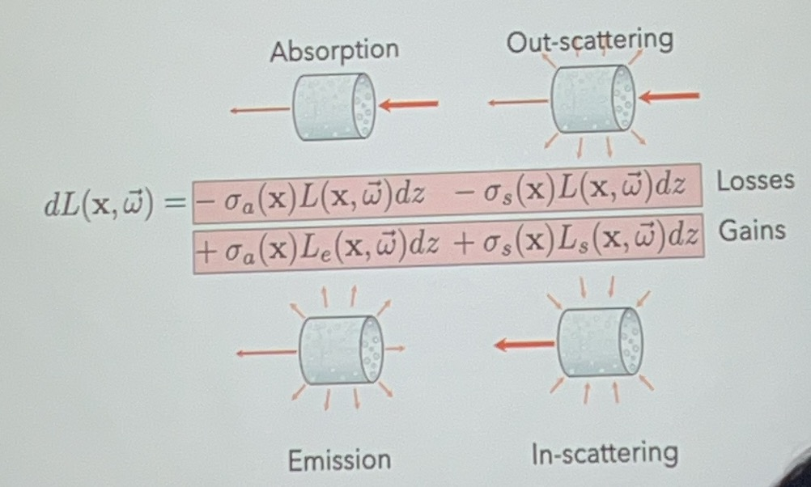
注意上面公式的\(L_e\)和\(L_s\)，不等同于\(L\)，所以不完全和入射光是线性关系。
但是这个计算成本很高。
考虑只有吸收的情况：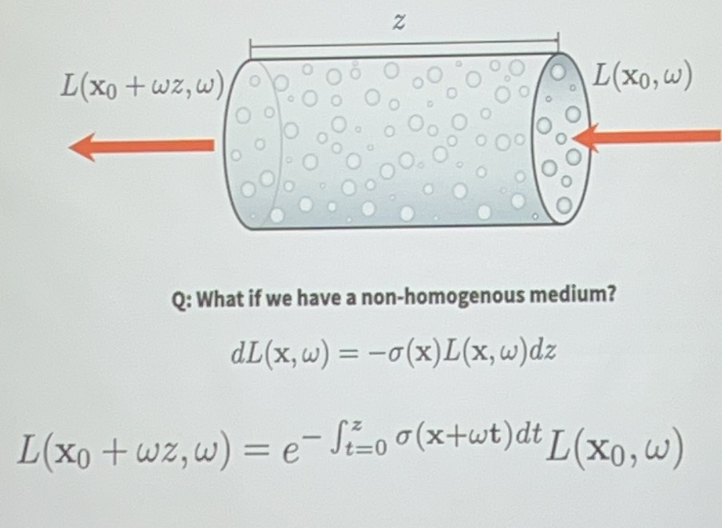
左边的系数被称为透光率\(T\)
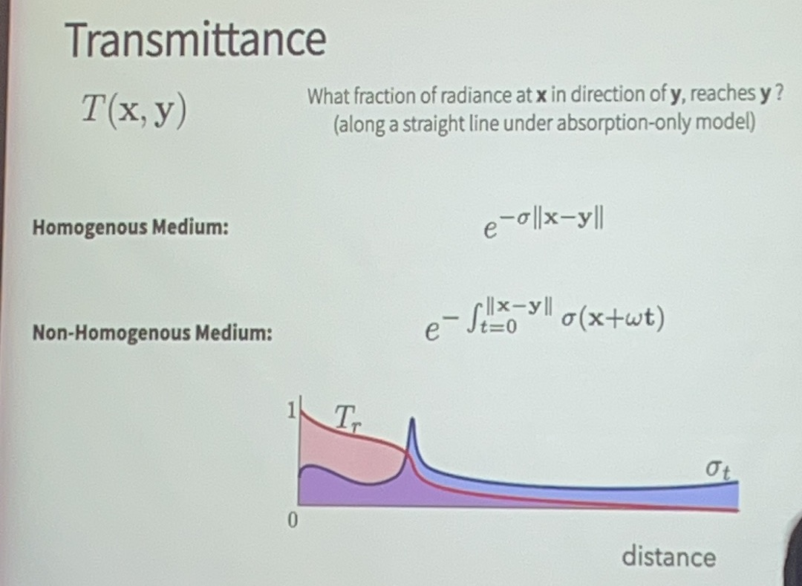
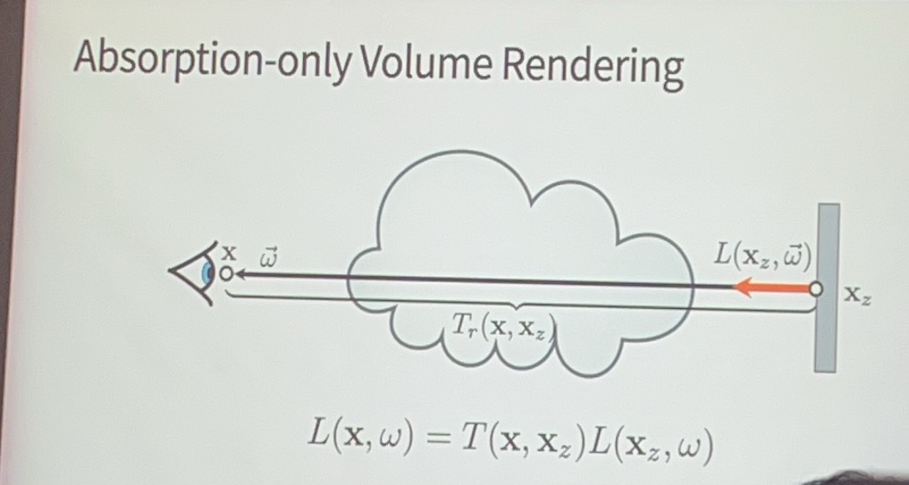
加上emission之后：
对于均匀质地介质的特殊情况：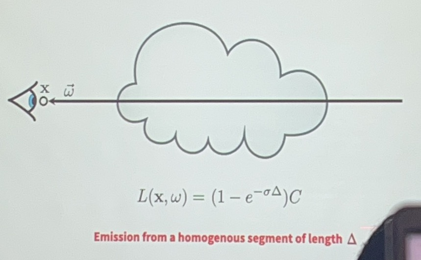
问题之一就是计算机不会算积分，我们可以取很多个离散点然后用点的能量近似点周围一段的能量。
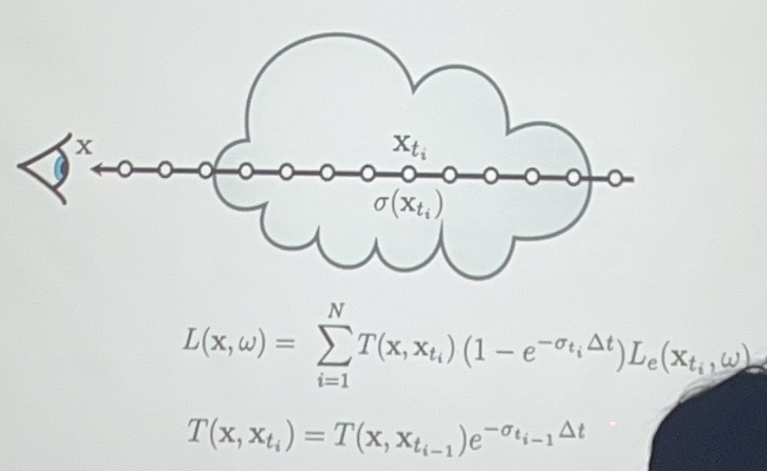
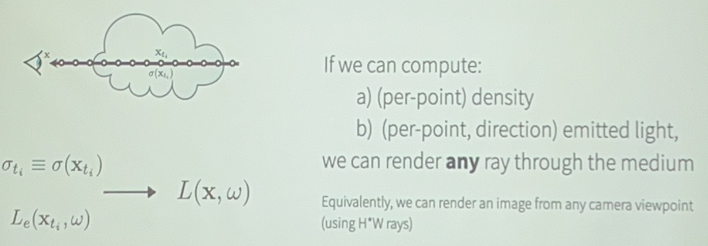
有了渲染算法后我们如何进行3D representation？
-
可以考虑grid representation，并且为了更好地表示，我们可以定义一个非二进制的密度。
-
机器学习模型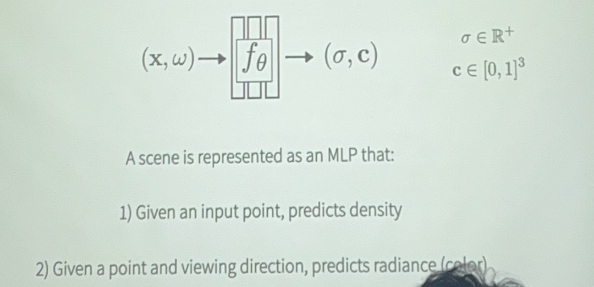
一般情况下渲染出来会比较模糊，使用position encoding可以更好地表示high frequency encoding
NeRF:
- 输入：三维空间中的一个点的坐标和视角方向。
- 输出：该点的颜色（RGB）和密度。
- 训练：通过大量的视角图像对神经网络进行训练，使其能够准确地预测场景的辐射场。
Rendering Primitives(e.g. Gaussians)- 基于图元的渲染¶
- draw samples along the way - wasteful - we know where the samples are
改进：find primitives that affect the ray
- aggregate their contributions to render
Mesh Rendering¶
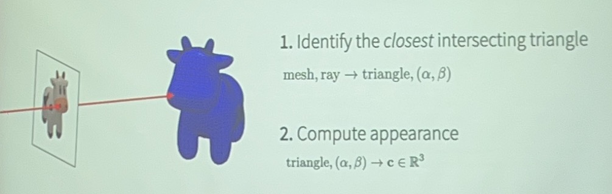
我们可以通过一些方式使得渲染出来的可微：
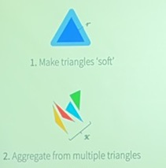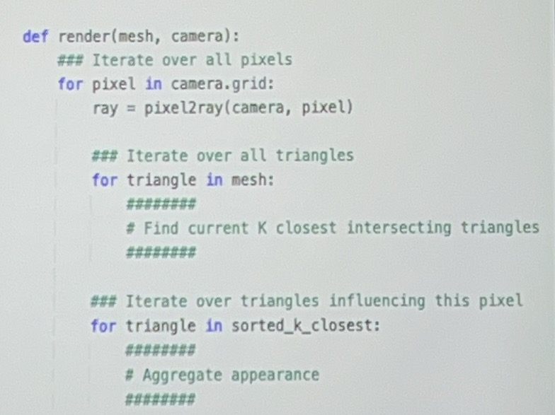
但是这个计算方式会造成冗余，我们对一个三角形会产生多次计算。优化如下：（先对每个三角形做迭代再对每个像素做迭代）
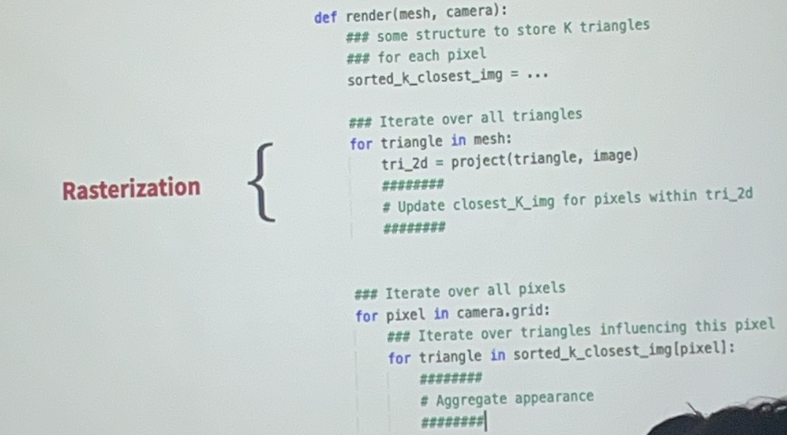
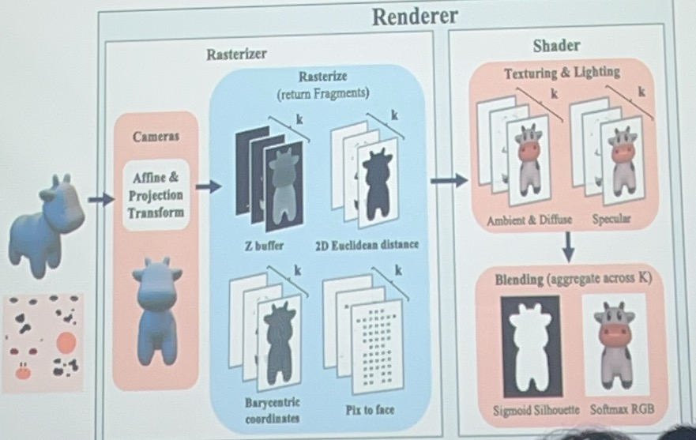
-
光栅化器（Rasterizer）：
-
Affine & Projection Transform：将三维模型通过相机进行仿射和投影变换，转换为二维视图。
-
Rasterize (return Fragments)：将三维模型分解成多个片段（fragments），包括：
- Z buffer：用于深度测试，确定像素的可见性。
- 2D Euclidean distance：计算每个片段到相机的二维欧几里得距离。
- Barycentric coordinates：计算每个片段在三角形内的重心坐标。
- Pix to face：将像素映射到对应的面。
-
-
着色器（Shader）：
-
Texturing & Lighting：对每个片段应用纹理和光照计算，包括：
- Ambient & Diffuse：环境光和漫反射光照。
- Specular：镜面反射光照。
-
Blending (aggregate across K)：将多个片段进行混合，生成最终的图像：
- Sigmoid Silhouette：使用 Sigmoid 函数处理轮廓。
- Softmax RGB：对 RGB 颜色进行 Softmax 处理，得到最终的颜色输出。
-
Gaussian Rendering¶
//todo 这块没懂
3D Prediction¶
Predict Volumetric 3D¶
我们的目标是通过单张2D的图片去建立3D representation of the underlying world
最简单的想法就是找到一个满足这个视角的图片的3D representation，但是这会导致其他视角or实际的3D representation不合理，因为一个2D的视角会带来很多解
我们需要通过[image, 3D]的数据集去训练，训练获取一个比较好的预测结果
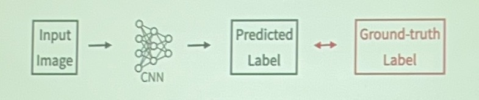

我理解的过程是：
- 2D decoder
- 3D encoder
- 把encode出来的每个体素的probability变成binary
隐式解码器会带来更好的预测效果
Predict Point Clouds¶
在这里loss的定义为predicted point距离最近的参考点之间的距离，比单纯的p和参考binary的{0,1}方差更好（我猜是和point cloud的性质有关，不太好作单个单位的分割）
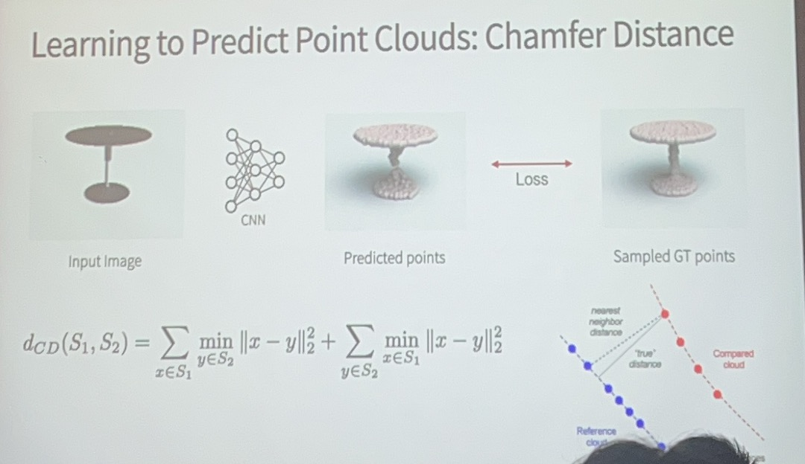
parametrically point clouds - 预测的点数量是固定的，一个2D图片的点的特征对应了一组固定的3D点
Predict Mesh¶
一般是从一个固定的mesh开始通过改变点的位置去deform实现prediction的。
Modelling Uncertainty¶
上面的预测我们都是给出了一个固定的预测，但是我们一张图片不可能包含所有的信息，需要对某些不确定的地方作处理。
Modelling Distributions over 3D¶
//todo